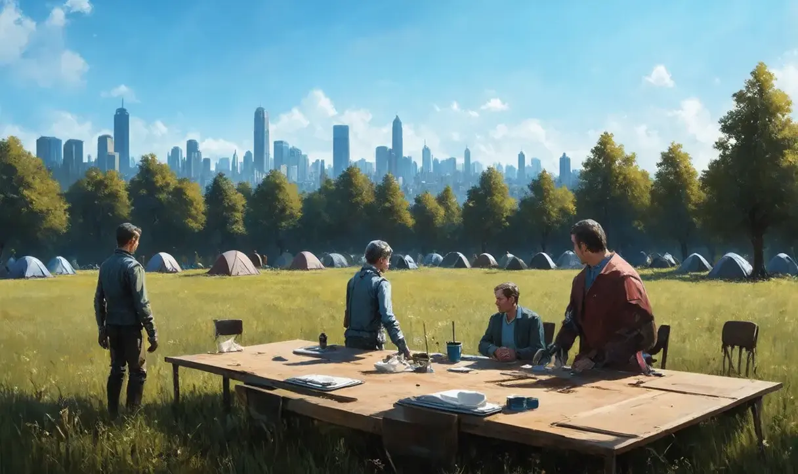
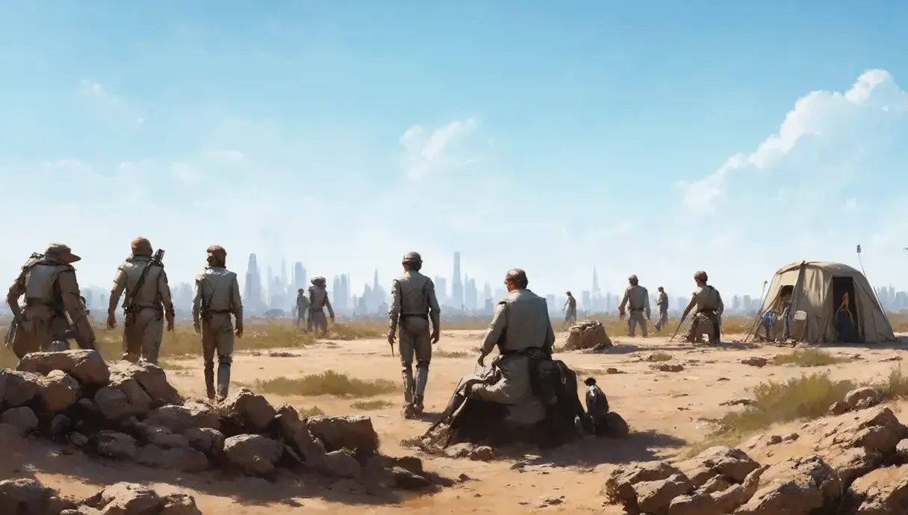

The catalogue
The studio plan is 440 fiction screenplay projects in 22 cycles of 20. Each one illustrates a mathematical or conceptual framework, and each is meant to be adapted later as a graphic novel. The images on this site test whether a small, local model can carry the visual language of those books.
| Slot | Title | Framework | Status |
|---|---|---|---|
| 03.01 | The Last Projectionist | Inverse problem: rebuilding a screening history from a missing reel | Treatment, outline, screenplay, visual bible |
| 01.01 | The Department of Unclaimed Rooms | Map versus territory, classification | Treatment, outline, screenplay, visual bible |
| 04.01 | The Society for Perfect Endings | Not started | |
| 07.01 | Whale Beneath the Railway | Not started | |
| 08.01 | Seven Minutes of Summer | Not started | |
| 11.01 | A Country Made of Footnotes | Not started |
Two looks were tested. 03.01 is charcoal on worn film print, near monochrome with one amber lamp. 01.01 is architect's pen linework with a flat slate wash, drawn as sections of one building.
Experiments
Four runs on Stable Diffusion 1.5 at 512 x 512, with the same two projects each time. Choose a run, then click any image for its prompt and seed.
Findings
What the model handles
- Medium and texture: charcoal grain, ink linework with flat wash.
- Casting studies. Portraits are strong, though identity changes between seeds.
- Locations and single props with a simple subject and a viewpoint.
- A named film strip, when asked for as a ribbon with square holes along both edges.
What gets built another way
- Devices that relate two things, such as a film frame growing out of a drawing or stacked tracing sheets.
- One coloured object in a grey scene. The colour appears sometimes and spreads.
- Lettering, panel layouts and exact numbers.
- Anything written as a negation. The model draws the thing.
Prompt rules that came out of the runs
- Put the subject and viewpoint first, then the medium.
- Ask for a full bleed drawing, and block frames, mats and gallery walls in the negative prompt. Otherwise the model draws a framed print.
- Generate four seeds for a portrait or a location. One seed gives no choice.
Archive
About 12,000 images from earlier experiments, shown as contact sheets of 400. Full-size files stay on the author's disk.
Preliminary run


Described images
Each image from an earlier set, with a written description. These are small previews made for testing, so expect softness.
Pipeline
A manifest lists a shared prompt, defaults and one category per project. The runner builds each prompt from the item, then the category, then the shared prompt, and sends it to a local ComfyUI service. The seed for each item comes from the base seed and its folder path, so the seed is repeatable when the collection name and item path stay the same. Matching results also depend on the workflow and execution environment.
{
"name": "slate-samples-v4",
"shared_prompt": "graphic novel interior art, hand drawn",
"defaults": { "batch": 3, "seed": 20261005, "negative": "text, watermark" },
"categories": {
"03.01": {
"prompt": "charcoal drawing, heavy black shadows",
"items": [ { "name": "key-object", "prompt": "close up of a ribbon of film" } ]
}
}
}
python generate_collection.py manifests/slate-samples-v4.json --dry-run python generate_collection.py manifests/slate-samples-v4.json --category 03.01
Setup used: Stable Diffusion 1.5 (v1-5-pruned-emaonly), 20 steps, CFG 8, Euler sampler, normal scheduler, no reference images and no LoRAs.